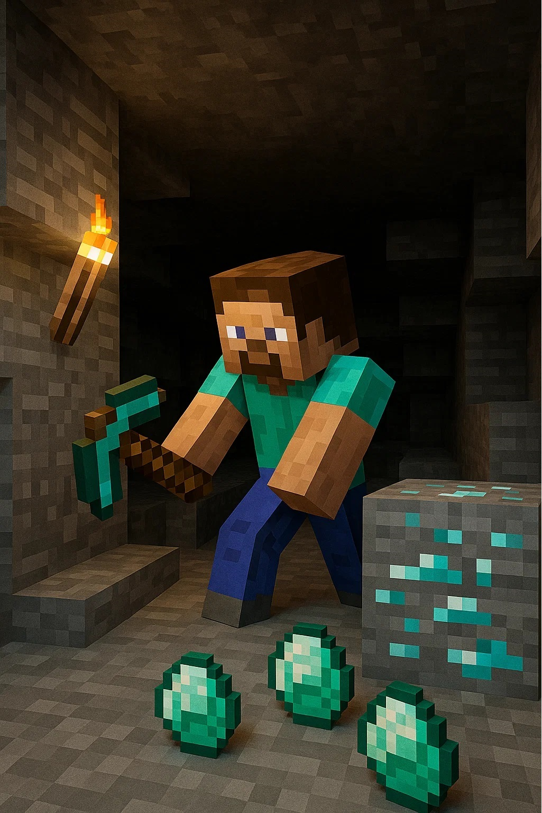
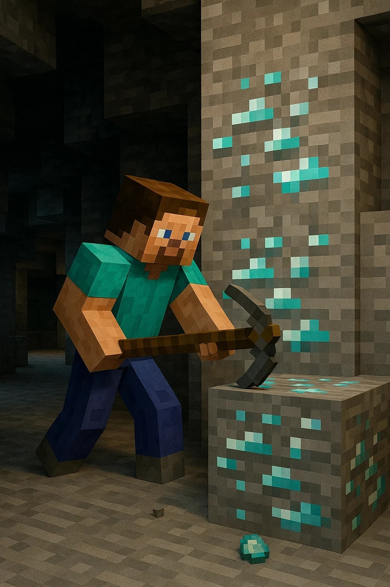
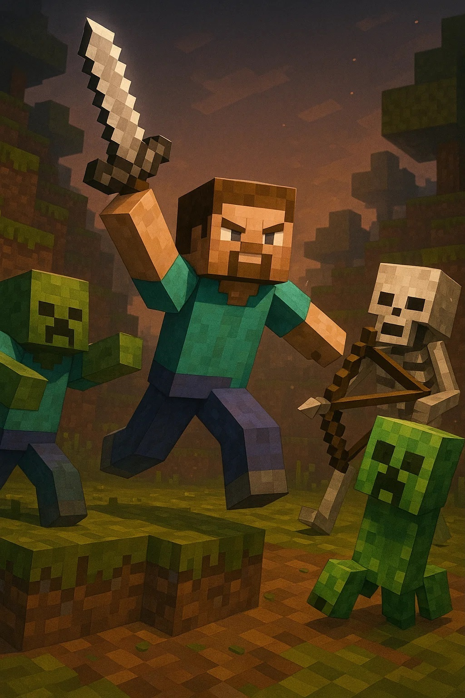
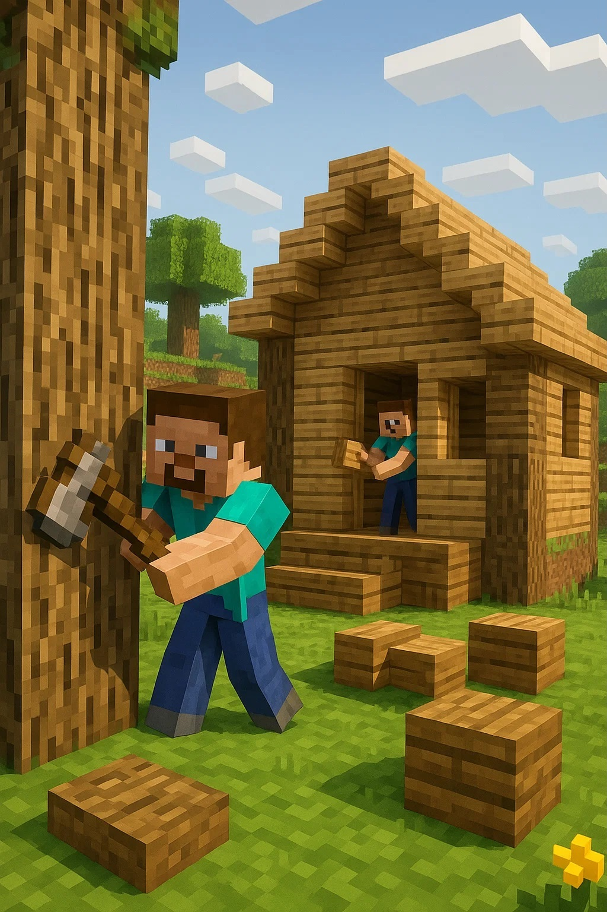

Minere em cavernas e colete minérios para evoluir ao decorrer do jogo.


Os diamantes são essenciais para sua proteção no jogo, podendo ser usados como armadura e ferramenta de ataque.

A noite, monstros irão aparecer para tentar te eliminar, derrote-os com espadas, machados ou arco e flecha.

Colete madeira de árvores e construa sua casa para morar, guardar os seus itens e dormir.
Sobre o Jogo
O jogo Minecraft é um jogo de sobrevivência, onde podemos desde matar animais para alimentação até derrotar um dragão em outra dimensão!!! No jogo existem 3 dimensões: o mundo normal, o Nether e o End.
O mundo normal consiste em nada demais, apenas um mundo onde o jogador pode construir casas, matar animais em busca de alimentos, minerar entre outras coisas para a sobrevivência.
No Nether, tudo é fogo. Nessa dimensão não existe dia nem noite, o céu é sempre vermelho. Lá existem fantasmas que atacam com bolas de fogo, porcos zumbis, esqueletos pretos que envenenam o jogador, porcos humanoides que fazem trocas por ouro, monstros de fogo que deixam labaredas ao cair, e também os Endermen — criaturas que se teletransportam, movem blocos e atacam se você olhar nos olhos deles. Ao morrerem, eles geralmente dropam um olho, que ao ser arremessado, teletransporta o jogador para o local onde cair.
O End é a dimensão onde o jogador pode zerar o jogo derrotando o dragão. Lá existem vários Endermen. Ao matar o dragão, ele deixa um ovo de dragão que não tem utilidade, mas é raro. Abaixo do ovo surge um portal, e ao entrar nele, aparecem os créditos. Mesmo após isso, o jogador ainda pode continuar jogando normalmente.